|
KOMPOZÝT MALZEME KULLANIM ALANLARI;
Kompozit
malzemeler artýk gittikçe artan oranlarda ve yeni sektörlerde
kullanýlmaya baþlanmýþtýr. Uzun zaman uçak sanayisindeki ihtiyaçlarýn
yönlendirdiði kompozit malzeme geliþimleri son dönemde yeni
bir çok sektörde birçok farklý amaç için kullanýlmaktadýr.
Tablo 4. ABD'nin 1991-1994 yýllarý arasýnda "milyon
kg" cinsinden kompozit malzeme ithalatý (Azom)
|
Pazar |
1991
|
1992 |
1993
|
1994 |
|
Uçak
ve Uzay sanayi |
17.6 |
14.7 |
11.5 |
11.0 |
|
Ticaret
gereçleri |
61.3 |
65.0 |
66.9 |
72.9 |
|
Ýnþaat
|
190.5 |
219.1 |
240.4 |
270.7 |
|
Tüketici
Ürünleri |
67.4 |
73.6 |
75.2
|
79.3 |
|
Korozyona
Dayanýklý Ürünler |
161.0 |
150.7 |
159.7 |
170.7 |
|
Elektrik |
104.8 |
117.9
|
124.7 |
135.8 |
|
Deniz
|
124.7
|
138.1 |
144.8 |
164.9 |
|
Ulaþým
|
309.4
|
340.2 |
372.9 |
428.9 |
|
Diðer |
33.5 |
37.8 |
40.5 |
46.2 |
|
Toplam
|
1070.2 |
1157.1 |
1236.6 |
1380.4 |
Havacýlýk
Sanayi
Özellikle
ileri kompozit malzemeler havacýlýk sanayinde çok geniþ uygulama
alanlarý bulmaktadýr. Komposite malzemelerinin hafifliklerine
oranla üstün mekanik özellikleri uçaklarda ve helikopterlerde
sadece içi mekan deðil yapýsal parçalarýnýda polimer esaslý
kompozitlerle üretilmesine neden olmaktadýr.
- B2
bombardýman uçaðý gövde panelleri; karbon fiber+epoksi
- A380
yolcu uçaðý kanat panelleri ve flapler; karbon fiber+epoksi
- A380
yolcu uçaðý burun bölümü (radome); CTP
- A380
yolcu uçaðý dikey stabilizer; Aramid fiber+epoksi
- Zemin
Plakasý; Airbus 300/600 uçaklarýnda kullanýlan karbon takviyeli
Polieterimid
- Uçak
EAPS kapaðý; (Karbon Elyafý+PEEK)
| 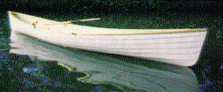 |
| 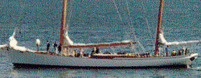 |
| 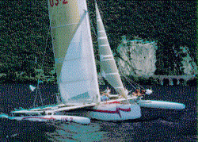 |
|
Resim
10. CTP Deniz Araçlarý |
Denizcilik
Sanayi
- Yelkenli
Gövdesi; CTP, Balsa ve polimer köpük üstüne cam, aramid
karbon dokumalarý ile kaplanmasý
- Yat,
Tekne Arkasý Platform
- Basamaklar;
CTP
- Yelken
Direði; Kevlar+Epoksi
Spor
Araçlarý
Kompozit
malzemelerin popüler olduðu yeni sektörler arasýnda spor araç
ve gereçleri her geçen gün daha da öne çýkmakatdýr. Özellikle
aðýrlýðýn azalmasý, dolayýsýyla hareket kabiliyetinin artmasý,
ve dayanýklýlýðýn artmasýna neden olan cam ve karbon elyafý
takviyeli kompozitler kullanýlmaktadýr.
Kompozitler
kano, sörf ve yatlar için çok önemli olan malzeme yorgunlupu
ve darbe dayanýmý konusunda üstün özelliklere sahiptirler.
Dað bisikletleri en iyi katýlýk/aðýrlýk oraný ve en düþük
aðýrlýk özellikleri kazanmak için karbon elyafý ile üretilmektedir.
Korozyona dayaným, þok emme ve saðlamlýk gibi üstün özellikler
kazandýrmaktadýr.
Ayrýca golf sopasý, tenis raketi gibi spor ürünlerinde aðýrlýðý
düþürmek için karbon elyafý takviyeli kompozit malzemelerden
üretilmektedirler.
- Su
kayaðý; Termoplastik prepreg
- Kar
kayaðý; Ahþap üzerine sarýlmýþ karbon, aramid, cam elyafý
karýþýmý+epoksi Kano küreði; (%33 Cam+Poliftalamid)
- Su
kaydýraklarý: CTP
- Sörf
Tahtalarý:; CTP
- Bisiklet;
(Karbon+Poliamid 6), yaklaþýk 1kg aðýrlýðýnda
- Reebook
Spor Ayakkabý; termoplastik poliüretan, petek (honeycomb)
- Golf
Sopasý; Karbon Fiber+Epoksi
- Tenis
Raketi; Aramid (Kevlar)+Epoksi
- Zýpkýn
Gövdesi; Karbon Fiber+Epoksi
- Palet;
Karbon Fiber+Epoksi
| 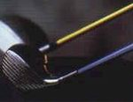 |
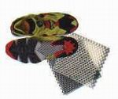 |
| 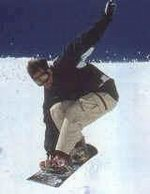 |
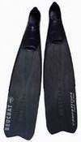 |
| 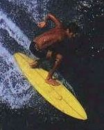 |
|
|
Spor
Malzemeleri |
Korozyona
Dayanýklý Ürünler
- Su
tanký; CTP
- Mazgal
Oluklarý; CTP
- Yeraltý
Borularý;
- Marketlerde
Dondurulmuþ Gýda Reyonu Kaplamasý; CTP
- Rasathane
Kubbesi; CTP
- Açýk
Saha Dolaplarý: CTP
- Çit;
CTP
- Ýlan
Panolarý; CTP
Saðlýk
- Tekerlekli
sandalye; Cam veya Karbon Elyaf takviyeli Polyester
- Týbbi
Tetkik Cihazlarý Dýþ Muhafazalarý; CTP
Ulaþým
- Traktör
Kaporta
- Kabin
- Oturma
Birimi; SMC
- Toplu
Taþýma Araçlarý Oturma Birimi; SMC
- Konteyner
Tabaný; GMT
- Otobüs
Havalandýrma Kanallarý
- Port
Bagaj Parçalarý
- Gösterge
Paneli; CTP
- Açýk
Alan Servis (Golf Arabasý) araçlarý kaporta, tavan; CTP
- Teleferik;
CTP, Maçka teleferiði
- Tren;
Kompozit prepreg ve dokuma malzemeler türleri artan oranlarda
tren konstrüksiyonunda maliyet ve aðýrlýk düþürmek amacýyla
kullanýlmaktadýr. Ýskelette aðýrlýðýn düþürülmesi enerji
tasarrufu saðlamakla beraber daha hýzlý araçlarýn geliþtirilmesine
katkýda bulunmaktadýr. Ayrýca trenlerde malzemelerin yüksek
katýlýða sahip olmalarý iskeletin desteklenmesine gerek
olmamasý anlamýna gelmaktedir ki böylece yolcu taþýma bölümü
ayrýlan mekan artýrýlabilmektedir. Tren konstruksiyonunda
kolay ve hzýlý deðiþebilen genellikle prepreg levhalar kullanýlýr.Böylece
tekil zarar gören paneller hýzla deðiþtirilebilmektedir.
|
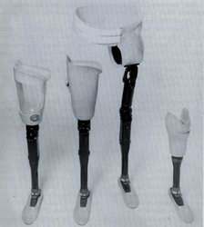 |
|
Resim
11.Yapay bacak |
|
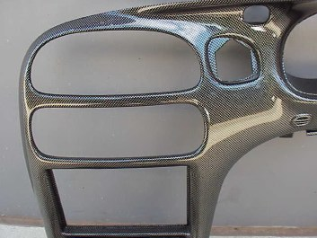 |
|
Resim
12. GM otomobil ön panel |
Otomotiv
Otomobil
firmasý müþterilerinin ihtiyaçlarýna karþýlýk vermek çevresel
þartlarýn baskýsý altýnda daha hafif otomobiller üretmektedirler.
Hafifi otomobiller daha çabuk hýzlanabilen, daha çabuk durabilen
ilerlemek için daha küçük bir motora ve daha az benzine ihtiyaç
duyan araç anlamýna gelmektedir.
- Cam
Sileceði; %30 Cam+PBT
- Fitre
Kutusu; Mercedes, %35 Cam+Poliamid 66
- Pedallar;
%40 Cam+Poliamid 6
- Dikiz
Aynasý; %30 Cam+ABS
- Far
Gövdesi; BMW, %30 Cam+PBT
- Hava
Giriþ Manifoldu; BMW, Ford, Mercedes, %30 Cam+Poliamid 6
- Otomobil
Gösterge Paneli; GMT
- Otomobil
Spoiler; CTP
- Otomobil
Yan Gövde Ýskeleti; Ford, CTP
- Otomobil
kaporta; Corvette, SMC CTP
FORMULA
1 Arabalarý;
Formula 1 arabalarýnýn yapýmýna ait düzenlemeler çok özeldir
ve titizlikle uygulatýlmaktadýr. Arabanýn tüm aðýrlýðý 605
kilogramý aþmamalýdýr. Tasarým mühendisleri en az aðýrlýkla
en saðlam çözümü bulmak durumundadýrlar. Daha önceleri yariþ
arabalarýnda hafif bir metal olan alüminyum kullanýlmaktaydý
artýk kompozit malzemeler çok daha düþük aðýrlýklarla serlik
ikiya katlanabilmektedir. Ayrýca karmaþýk parçalarýn kompoýzit
malzemelerle üretilebilmesi F1 otomobillerin üretiminde gerekli
parça sayýsý azaltýlabilmektedir. Alümninyumla 200'den
fazla parçayla üretilen gövde ve saþe beþ parçaya düþürülmüþtür.
Kompozit malzemeler metal çivatalar gibi baðlantý parçalarý
ile birleþtirilmek yerine epoksi reçimesi ile birbirlerine
baðlanmaktadýr.
F1 arabalarýnda aþaðýda belirtilenlerle beraber birçok parça
kompozit malzeme kullanýlmaktadýr.
- Motor
kaplamasý
- Burun
kapaðý
- Ön
ve arka kanatlar, spoiler
- Ana
gövde. Mühendislik
- Elektrik
daðýtým Panolarý; CTP
|
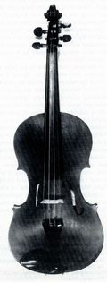 |
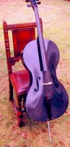 |
|
Karbon
+ epoksi Keman |
Müzik
aletleri
London
College of Furniture ve diðer bazý yerlerde ileri kompozit
malzemelerle müzikal enstrümanlar yapýlmasý üzerine çalýþmalar
bulunmaktadýr. Ýleri kompozit malzemelerle yapýlan yaylý sazlarda
boyun kýsmýnýn tellerin gerilmesinden dolayý deforme olmasý
karþýlaþýlan temel sorunlardandýr.
- Keman;
Karbon Fiber+Epoksi
- Gitar;
Karbon lamine tabakalar arasý polimer köpük
- Akustik
Gitar; Grafit-Epoksi
- Çello;
Karbon + Epoksi
Yapý
sektörü
- Köprü
Tabaný;CTP
- Trabzaný;CTP
- Yürüme
yollarý;CTP
- Taþýyýcý
Konstruksiyon;CTP
- Bina
Balkon Korkuluðu;CTP
- Kapý;CTP
- Taþýyýcý
Konstruksiyon, Yüzme Havuzu, Kapý Saçaðý, Yer karolarý;
SMC
- Bina
Kaplama Panelleri: CTP
- Küvet;
CTP
- Lavabo;
CTP
- Sokak
Lambasý; CTP
KAYNAKLAR
- Olcay
Y., Akyol M., Gemci R., 2002, Polimer Esaslý Lif Takviyeli
Kompozit Malzemelerin arabirim Mukvemeti Üzerine Farklý
Kür Metodlarýnýn Etkisinin Ýncelenmesi, Uludað Üniversitesi
Mühendislik-Mimarlýk fakültesi, Cilt 7, Sayý 1, Bursa
- Philips
N. L.,1989, Design with Advance Composite Materials,Springer-Verlag,
The Design Council, Great Britain Younnossi O., Kennedy
M., Graser J. C I., 2001, Military Airframe Costs The Effects
of Advanced Materials and Manufacturing Processes, Project
Air Force, RAND, Pittsburg, USA
- Cam
Elyaf, 1997, Bülten Sayý 6, Cam Elyaf Sanayi A.Þ.,
- www.science.org.au/nova/059/059key.htm
> Putting it together - the science and technology of
composite materials
- www.fibersource.com
> FiberSource: The Manufactured Fiber Industry
- http://plastics.about.com/library/weekly/aa060297.htm
> Composites / Plastics - What's a Composite?
- www.geocities.com/CapeCanaveral/1320
> Vince Kelly's Carbon Fiber Homepage
- www.fibreglast.com
> Fiberglass, Carbon Fiber - Fibre Glast Developments
Corp.
- www.msm.cam.ac.uk/phase-trans/2001/stef/img23.htm
> Peel Joint: FE Model
|